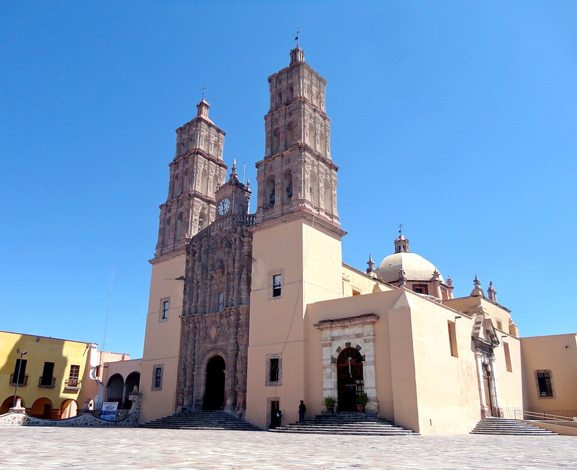

El cura Hidalgo alza al pueblo de Dolores contra el mal gobierno
En la madrugada, la campana de la parroquia llamó a rebato y don Miguel Hidalgo llamó al pueblo a tomar las armas. Descubierta la conspiración de Querétaro, el aviso de la esposa del corregidor precipitó la hora. Cientos marchan ya, y se suman más a cada legua, tras el estandarte de la Guadalupana.

Antes del alba, cuando el pueblo de Dolores dormía aún, la campana de la parroquia comenzó a llamar a rebato. No convocaba a misa. En el atrio, a la luz de los faroles, el cura don Miguel Hidalgo y Costilla habló a los vecinos que acudían con el sueño en los ojos: la hora había llegado, dijo, de defender la religión y la patria, de acabar con el mal gobierno que entrega el reino a los usurpadores. Cuentan que gritó vivas a la América y a Fernando VII y mueras al mal gobierno, y que el pueblo respondió con un clamor que estremeció la madrugada.
Hidalgo no está solo. Lo acompañan don Ignacio Allende y don Juan Aldama, oficiales del regimiento de la Reina, llegados a galope esta misma noche desde San Miguel el Grande. Antes del toque, el cura hizo abrir la cárcel para sumar a los presos y mandó asegurar a los españoles europeos del pueblo. Con los vecinos, los presos y los trabajadores de sus talleres y su alfarería, juntó en pocas horas varios cientos de hombres. Van armados como pueden: unos cuantos fusiles, espadas viejas, y en las manos del común lanzas, machetes, palos, hondas e instrumentos de labranza.
El alzamiento debía estallar más adelante, pero la conspiración que se tramaba en Querétaro fue delatada. La esposa del corregidor, doña Josefa Ortiz, encerrada por su marido, halló modo de avisar a los comprometidos: por su aviso cabalgó Aldama hacia Dolores, y por ese aviso la insurrección se adelanta hoy en vez de morir en la cuna. Detrás de la trama hay años de agravios: el reino descabezado por la prisión del rey a manos de Napoleón, los criollos apartados de los empleos, el hambre de los campos, y juntas y conjuras que el gobierno ha ido ahogando una tras otra.
La columna salió de Dolores en la mañana, engrosándose en cada rancho. Se dice que al pasar por el santuario de Atotonilco el cura tomó un lienzo de la Virgen de Guadalupe y lo alzó como estandarte, y que la muchedumbre lo siguió con lágrimas y vítores, como quien sigue una bandera que no necesita explicación. Marchan hacia San Miguel el Grande hombres y mujeres del campo, indios y castas, gente que nunca formó en ejército alguno. Los testigos hablan más de fervor que de orden: rosarios al cuello, hondas al cinto, y el nombre de la Guadalupana en todas las bocas.
Este diario no sabe qué suerte correrá el movimiento que hoy nace en un pueblo pequeño del Bajío. Sabe que las armas del virreinato son muchas y disciplinadas, y que los alzados llevan hondas y palos. Pero sabe también que hay campanas que no pueden hacerse callar una vez que han sonado. Un cura de aldea ha puesto en pie, en una sola madrugada, a la gente más olvidada de esta tierra, y eso no lo había logrado ejército alguno. Sea lo que Dios disponga, la fecha de hoy, dieciséis de septiembre, quedará escrita en la memoria de esta América.